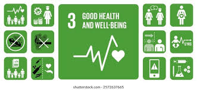

ODS Salud y Bienestar
El Objetivo de Desarrollo Sostenible 3 tiene como finalidad principal garantizar una vida sana y promover el bienestar en todas las etapas de la vida. Este objetivo aborda una amplia variedad de problemáticas relacionadas con la salud a nivel global, desde enfermedades transmisibles hasta padecimientos crónicos y salud mental.
Entre sus metas más importantes se encuentra la reducción de la mortalidad materna e infantil, el combate contra epidemias como el VIH/SIDA, la tuberculosis y otras enfermedades, así como el fortalecimiento de los sistemas de salud en todos los países.
Además, el ODS 3 pone un énfasis especial en la prevención, promoviendo estilos de vida saludables mediante la educación, el acceso a información confiable y la implementación de políticas públicas que favorezcan el bienestar de la población.
Otro aspecto relevante es la salud mental, la cual ha cobrado mayor importancia en los últimos años debido al impacto del estrés, la ansiedad y otros factores emocionales en la vida diaria de las personas. Promover el bienestar no solo implica cuidar el cuerpo, sino también mantener una mente sana.
En este contexto, nuestro proyecto busca contribuir a este objetivo mediante la difusión de información clara y accesible, incentivando a las personas a adoptar hábitos como una alimentación balanceada, la práctica regular de ejercicio y el cuidado emocional.
Equipo de trabajo:
- Alejandro Saade
- Jose Roberto
- Sebastian Suarez
- Victor Escamilla

